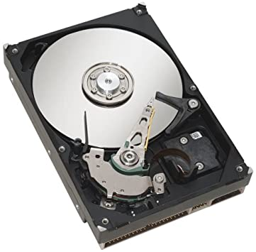
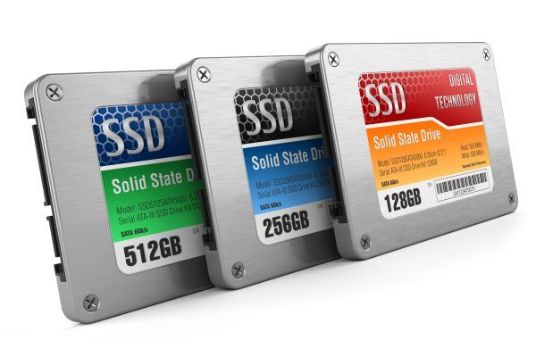

Magnetic Storage
Description:
- Parts of the surface is either magnetised (1) or demagnetised (0).
- The read/write head can control the magnetisim of the sectors to write the data. But it can also read the data by reading what state they are in.
Advantages:
- Large capacity.
- Cheap to buy.
- Usually reliable.
- Not very durable.
- Generally not portable./li>
- Can be noisy.
- Generates wasted energy in the form of thermal energy.
Disadvantages:
Solid State Drive
Description:
- A form of flash memory so is non-mechanical.
- Consists of digital circuits with electrons that retain data and can be altered.
Advantages:
- Have very fast read and write times than other types of storage.
- Very reliable because they are non-mechanic.
- Silent, do not make any noise.
Disadvantages:
- Generally, they have a smaller capacity than magnetic storage.
- Expensive compared to all other types of storage.
Optical Discs

Description:
- Data is stored as microscopic indentations on the disc. Where a pit represents the value "1" in binary and a land represnts a "0" in binary.
- This data is read by a read/write laser beam which scans over the disc.
- If the laser comes across a pit, the laser will reflect back in scatters.
- If the laser comes across a land, the laser will just reflect back like normal.
Advantages:
- Fairly reliable.
- Portable - Easy to carry and transport.
Disadvantages:
- Small capacity.
- Easily damaged - prone to scratching.
Cloud Storage
Description:
- Type of storage where data is stored in a remote location by uploading via the internet.
- Normally, people have to pay for a subscription however some may provide a limited service for free.
Advantages:
- Data and information can be accessed by the user from any device.
- Increasing storage space is often easy.
- Almost always cheap or free.
- Expensive hardware is not required.
Disadvantages:
- An internet connection is always needed to access files.
- Data and files are vulnerable to potential hackers.